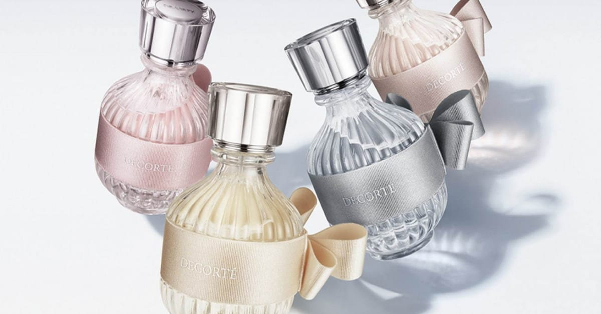

着物を纏った時の、背筋がすっと伸びるような凛とした美しさ。そんな日本の美意識を香りで表現したコスメデコルテの「キモノ（KIMONO）」シリーズ。
中でも、圧倒的な透明感と幸福感で「奇跡の透明感」とSNSで話題を集める「ユイ（YUI）」の魅力に迫ります。
帯を結んだようなボトルデザインも人気の理由。
1. コンセプトは「結（ゆい）」
「ユイ」の名は、「結（ゆい）」に由来します。人と人との縁を結ぶ、大切な想いを結ぶ。そんな温かなメッセージが込められたこの香りは、初対面のシーンや、大切な人と過ごす穏やかな時間に寄り添います。
ボトルのデザインも、帯を結んだようなフォルムが特徴的で、ドレッサーに置くだけで空間に和モダンな華やかさを与えてくれます。
2. 香りの構成：酢橘（スダチ）の魔法
香りの骨格となるのは、日本の夏を感じさせる爽やかな柑橘と、繊細なフローラルノートの調和です。"Transparent Floral"（トランスペアレントフローラル）と称されるその香調は、あくまで透き通るように軽やか。
香りの持続時間：約 4 - 5 時間（オードトワレ）
香りの変化
トップ：弾けるような爽やかさと、ほろ苦い柑橘のアクセント。レモンとは違う「酢橘（スダチ）」のドライな酸味が、一瞬で視界が開けるような透明感を演出します。
ミドル：太陽の光を浴びたような、明るく清潔感のあるオレンジフラワー。甘すぎず、清潔な印象を与えます。
ラスト：肌に溶け込むようなバニラとウッディ。角のない柔らかな甘さが、まるで洗い立てのリネンに残る陽だまりのような優しさを残します。
3. Coleglance's Impression
特筆すべきは、トップノートの表現力です。ピンクペッパーのスパイスが酢橘と重なり、「甘すぎない清潔感」を実現しています。
時間が経つにつれて現れるバニラは決して重たくならず、オフィスシーンからデートまで、好感度を約束してくれる傑作です。「香水は苦手だけど、良い匂いをさせたい」という方にこそおすすめです。
まとめ
コスメデコルテ「キモノ ユイ」は、日本の美意識が生んだ、世界に誇れる「透明感」の香り。自分自身を清らかに保ちたい時、大切な人との縁を感じたい時、この香りがそっと背中を押してくれるはずです。